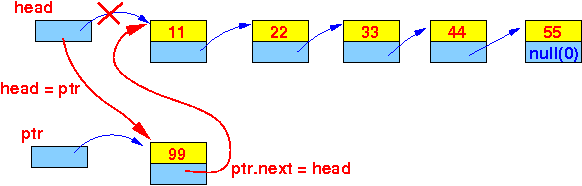

- Suppose we have an
existing
linked list at
head and
a list element at
ptr:

The Java statements (that you learned in CS171) to insert the list element at the start of the list are:
/* ======================================================== Statements to insert list element "ptr" at start of list ======================================================== */ ptr.next = head; // Make ptr.next points to first element of list head = ptr; // Make head points to the new list elementThe result of these statements is:

- Example Program:
(Demo above code)

- Prog file: /home/cs255001/demo/asm/4-linked-list/ListInsert.java
How to run the program:
- To compile: javac ListInsert.java
- To run: java ListInsert
- When you write the
Java statements in
(ARM) assembler,
you will see clearly how an
list element is
inserted in a list:
- The references (= addresses) in certian field are updated to make the new order chaining of list elements !!!
I will show you the assembler program below.
But before I do so, I want to make sure that you realize:
- When you write an assembler program,
you will make copies
of a variable in
the registers in the
CPU
Warning:
- We you update a
register, you
will not update the
memory variable !!!
(You only update a copy, not the original !!!)
- We you update a
register, you
will not update the
memory variable !!!
- You must update the program variables that are stored in the memory !!!
- I will skip the linked list definition, because I explained that already.
I will assume that the list has been defined and I will only show you the assembler code to insert a new list element into an existing list.
- The assembler program that
accomplishes the statements:
ptr.next = head; head = ptr;is as follows:
main: /* ------------------------------------- ptr.next = head; -------------------------------------- */ // Get the value in the RHS movw r0, #:lower16:head movt r0, #:upper16:head // r0 = addr(head) ldr r0, [r0] // r0 = head // Get the ADDRESS of the LHS movw r1, #:lower16:ptr movt r1, #:upper16:ptr // r1 = addr(ptr) ldr r1, [r1] // r1 = ptr // Note: Addr(ptr.next) = r1+4, use base+offset mode !! // Store the RHS in the addr of LHS str r0, [r1, #4] // Update variable in memory !! /* ------------------------------------- head = ptr; -------------------------------------- */ // Get the value in the RHS movw r0, #:lower16:ptr movt r0, #:upper16:ptr // r0 = addr(ptr) ldr r0, [r0] // r0 = ptr // Get the ADDRESS of the LHS movw r1, #:lower16:head movt r1, #:upper16:head // r1 = addr(head) // Store the RHS in the addr of LHS str r0, [r1] // Update variable in memory !!
- Example Program:
(Demo above code)
- Prog file: /home/cs255001/demo/asm/4-linked-list/list-insert.s
How to run the program:
- To compile: as255 list-insert
- To run: use EGTAPI